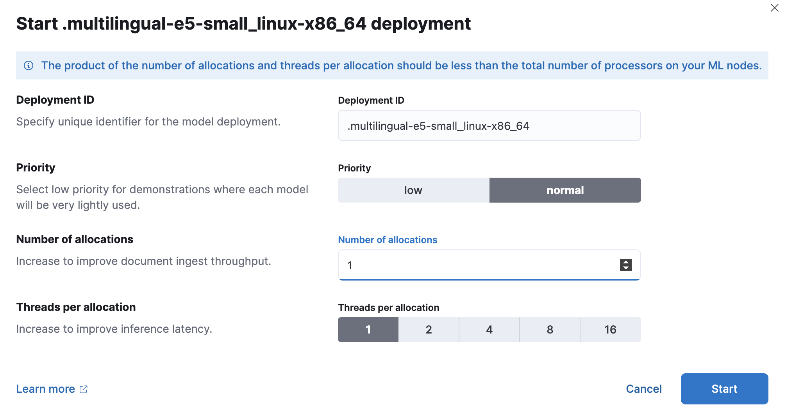
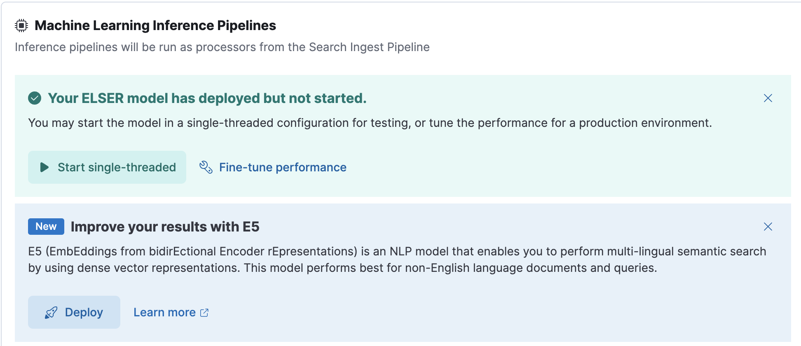

E5 – EmbEddings from bidirEctional Encoder rEpresentationsedit
EmbEddings from bidirEctional Encoder rEpresentations - or E5 - is a natural language processing model that enables you to perform multi-lingual semantic search by using dense vector representations. This model is recommended for non-English language documents and queries. If you want to perform semantic search on English language documents, use the ELSER model.
Semantic search provides you search results based on contextual meaning and user intent, rather than exact keyword matches.
E5 has two versions: one cross-platform version which runs on any hardware and one version which is optimized for Intel® silicon. The Model Management > Trained Models page shows you which version of E5 is recommended to deploy based on your cluster’s hardware.
The supported model version of E5 is multilingual-e5-small, refer to
this page for more information.
Refer to the model cards of the multilingual-e5-small and the multilingual-e5-small-optimized models on HuggingFace for further information including licensing.
Requirementsedit
To use E5, you must have the appropriate subscription level for semantic search or the trial period activated.
Download and deploy E5edit
You can download and deploy the E5 model either from Machine Learning > Trained Models, from Search > Indices, or by using the Dev Console.
Using the Trained Models pageedit
- In Kibana, navigate to Machine Learning > Trained Models. E5 can be found in the list of trained models. There are two versions available: one portable version which runs on any hardware and one version which is optimized for Intel® silicon. You can see which model is recommended to use based on your hardware configuration.
-
Click the Add trained model button. Select the E5 model version you want to use in the opening modal window. The model that is recommended for you based on your hardware configuration is highlighted. Click Download. You can check the download status on the Notifications page.

Alternatively, click the Download model button under Actions in the trained model list.
- After the download is finished, start the deployment by clicking the Start deployment button.
-
Provide a deployment ID, select the priority, and set the number of allocations and threads per allocation values.
 - Click Start.
Using the search indices UIedit
Alternatively, you can download and deploy the E5 model to an inference pipeline using the search indices UI.
- In Kibana, navigate to Search > Indices.
- Select the index from the list that has an inference pipeline in which you want to use E5.
- Navigate to the Pipelines tab.
-
Under Machine Learning Inference Pipelines, click the Deploy button in the Improve your results with E5 section to begin downloading the E5 model. This may take a few minutes depending on your network.
 -
Once the model is downloaded, click the Start single-threaded button to start the model with basic configuration or select the Fine-tune performance option to navigate to the Trained Models page where you can configure the model deployment.

When your E5 model is deployed and started, it is ready to be used in a pipeline.
Using the Dev Consoleedit
- In Kibana, navigate to the Dev Console.
-
Create the E5 model configuration by running the following API call:
PUT _ml/trained_models/.multilingual-e5-small { "input": { "field_names": ["text_field"] } }The API call automatically initiates the model download if the model is not downloaded yet.
-
Deploy the model by using the start trained model deployment API with a delpoyment ID:
POST _ml/trained_models/.multilingual-e5-small/deployment/_start?deployment_id=for_search
Deploy the E5 model in an air-gapped environmentedit
If you want to deploy the E5 model in a restricted or closed network, follow the instructions in the Eland client documentation.
Disclaimeredit
Customers may add third party trained models for management in Elastic. These models are not owned by Elastic. Customers must contract separately with the third party model owner for the use of the model, and such use will be governed by the applicable terms and conditions. You understand and agree that Elastic has no control over, or liability for, the third party models.